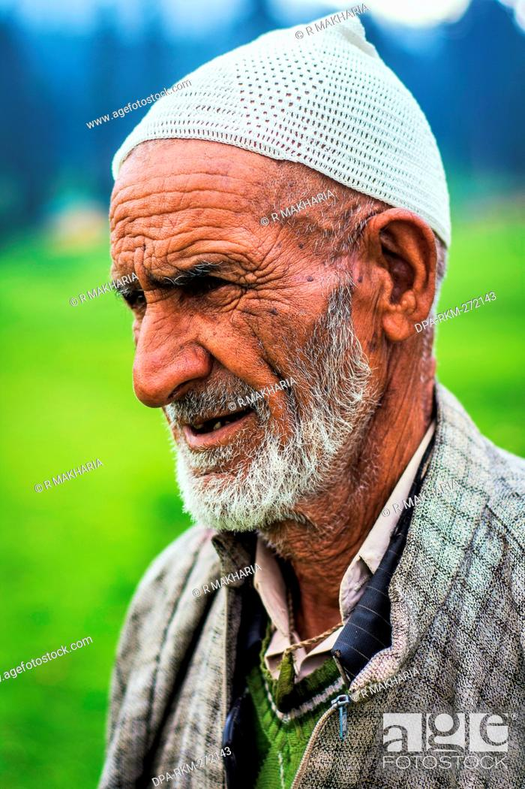

Hazratbal Shrine
The Hazratbal Shrine is a Muslim shrine located in Srinagar, Jammu & Kashmir, India. It contains a relic believed by many Muslims to be a hair of the Islamic prophet Muhammad.
Details
- Location: Hazratbal Rd, Hazaratbal, Srinagar, Jammu & Kashmir, India
- Architectural style: Islamic architecture
- Completed: 1700s
- Architect: Ustad Ahmad Lahauri
Reviews

Sul Kak
Visited Hazratbal Shrine last month and it was an amazing experience. The architecture is beautiful and the atmosphere is very peaceful. Highly recommend!
Gul Kak
The Hazratbal Shrine is one of the most beautiful places in Srinagar. The view of the Dal Lake from the shrine is breathtaking. Don't miss it!